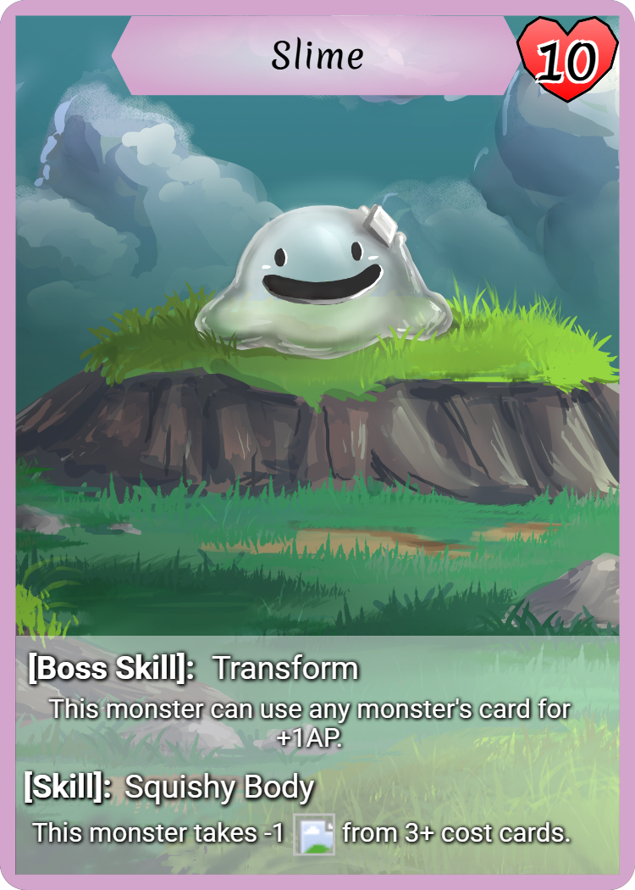
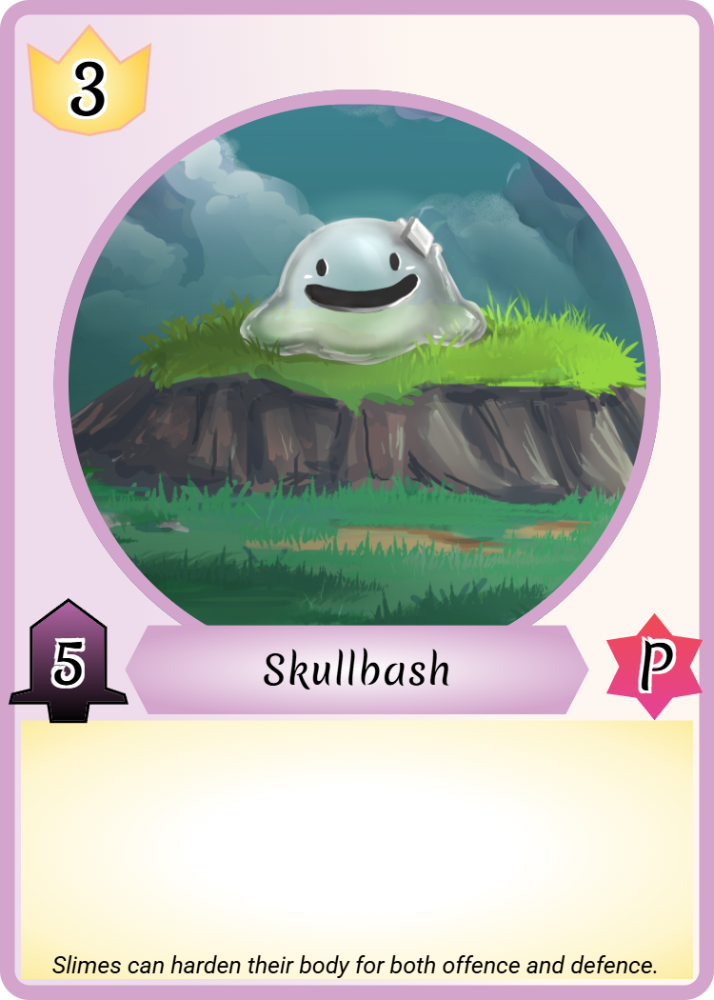
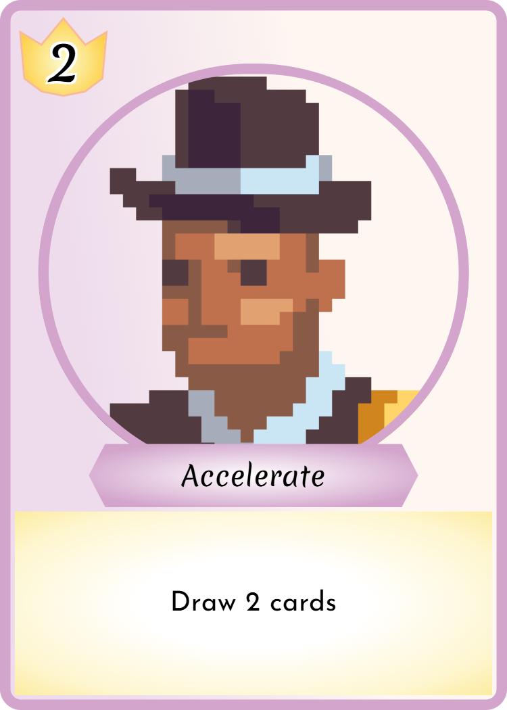

Creature Coliseum
Introduction
Assemble a team of 3 monsters to fight other players in the Coliseum! Use each monster's unique attacks and skills to answer age-old questions like "Can Mothman take down a Kappa?" Last player standing wins!
Card Samples



Each monster has its own HP value and 2 skills: one that's always active, and one that's reserved for the monster you pick as your Boss. The Boss Monster also gains a 2nd benefit; they cannot be targeted by actions until one of your other monsters is defeated.
Each action has a cost indicated in the top left, which is paid for using other cards in your deck. At the start of each turn, you may place a card from your hand face-up in your Action Point pool to be used for that monster's actions each turn. At the end of your turn, you may put any number of cards from your hand face-down in your Temporary AP pool. Temp AP works for any monster's action, but is discarded after use. At the start of each turn, draw until you have 5 cards in hand.
Change things up with a Tactic! At the start of the game, each player reveals 4 tactics and places them on the side of the play area. Any player may use Temp AP to pay for a Tactic. Once a Tactic is used, it is discarded, so you'll need to balance using them at the perfect time with the threat of the opponent using it before you.
Demo
Try out our demo in Tabletop Simulator!